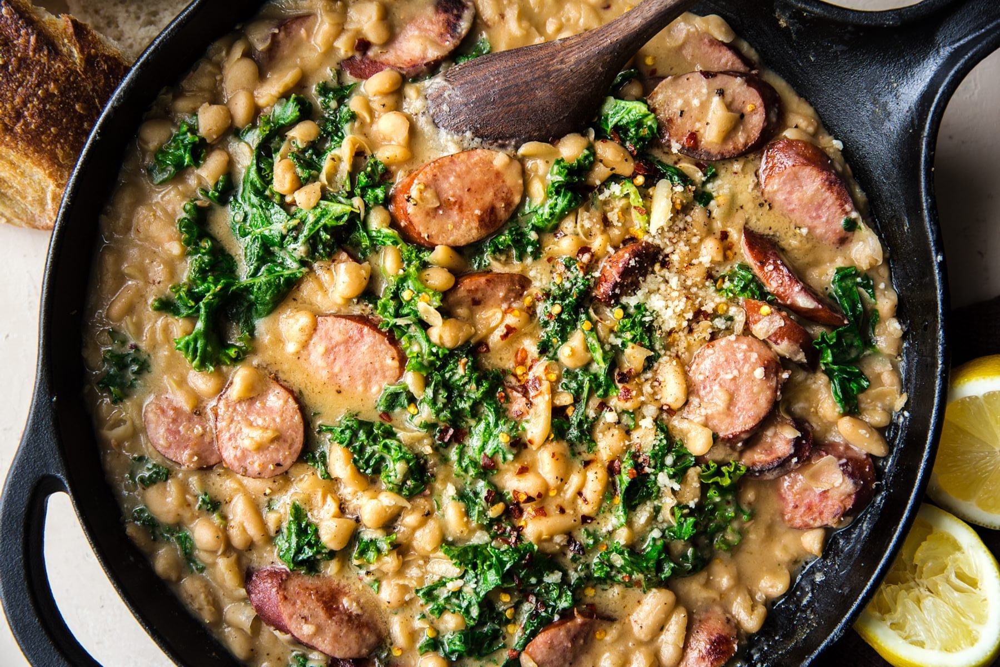

White Bean Sausage Skillet

One pan? Check. Super delicious? Check and check.
This garlic-flecked, kale, white bean and sausage skillet dinner is easy, tasty and ready fast.
Ingredients
4 servings
- Olive oil
- Italian or smoked sausage
- Garlic
- White Beans
- Chicken Stock
- Fresh Thyme
- Kale
- Lemon Juice
- Parmesan
Steps
- Brown the sausage—this will help keep it from losing all of its texture when you braise it later. Remember, we are calling for cooked sausage, so if all you have is raw, cook it first. Then slice it up and brown those slices.
- Set the sausage aside while you use that same skillet to get dinner going. Start with oil and garlic, then quickly add the beans, stock, salt, pepper and thyme.
- It is already going to smell like dinner is well on the way at this point, and that is because IT IS. Now you get to smash those beans—remember some, not all of them.
- When everything is really bubbling together and smelling good, stir in the kale and let it wilt.
- Time for parmesan, lemon and sausages! Stir them in and simmer it all together on low.
- Dinner is served!